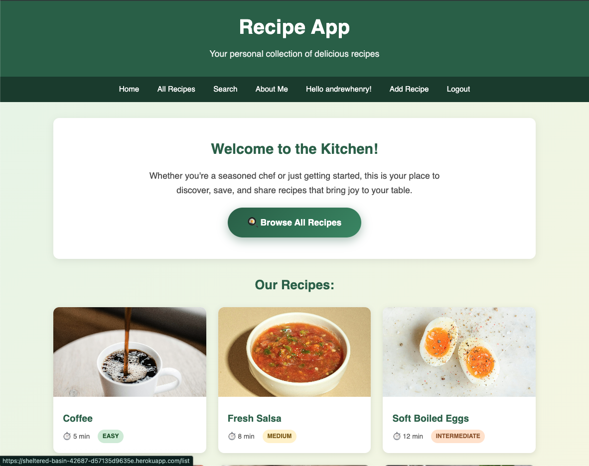
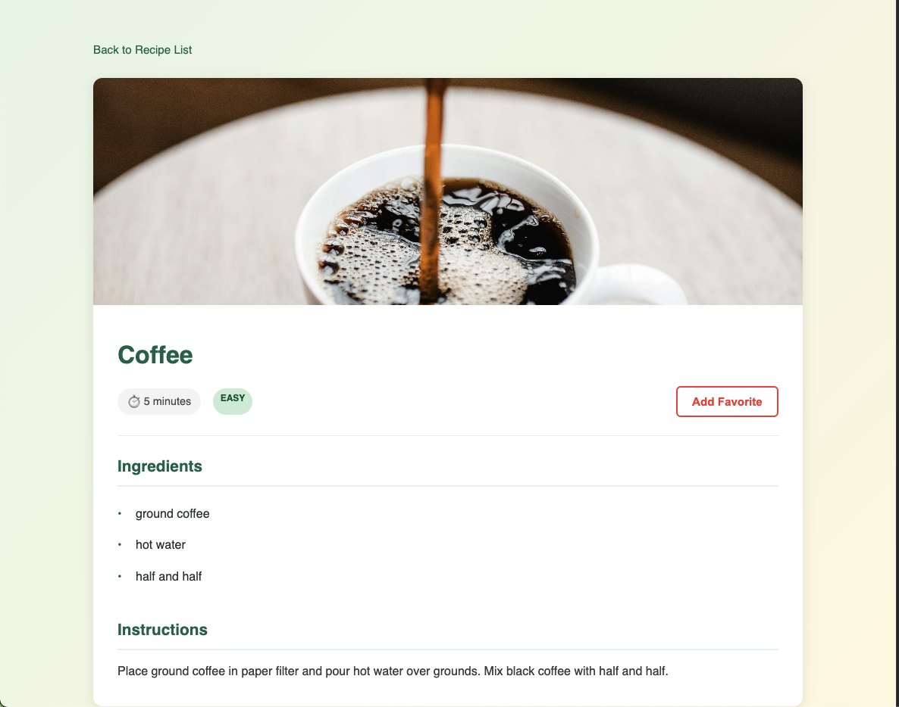

The Recipe App is a full-stack Django web application for discovering, creating, and sharing recipes. Users can browse a collection of recipes, create accounts to save their favorites, and upload their own recipes for others to see. The application features a comprensive search system with data visualization capabilities, allowing users to filter recipes by name, ingredient, difficulty level, or cooking time. The application automatically calculates recioe difficulty based on cooking time and ingredient count, providing users with helpful feedback when browsing recipes.
This project was my first foray into developing a web application using Python and using Django along with that. The project incorporates user authentication, CRUD operations, database relationships, and deployment to a production environment (using Heroku). In developing this porject, I learned a number of new skills, inclduing working with Django's authentication systems, creating data visualiztion with Panadas and Matplotlib, and deploying a Django application to Heroku (amoung other skills). Please feel free to provide comments, feedback, or suggest features via my contact form.

The Recipe App homepage displaying recipe cards with difficulty badges
Recipe detail page with ingredients, instructions, and favorite button